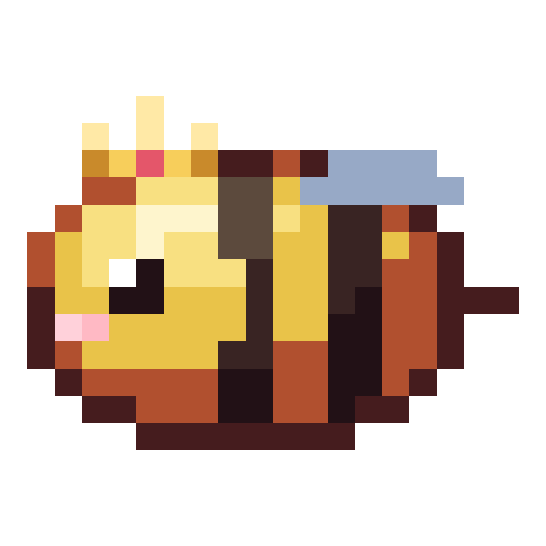

CO
coordinator#main#1
購買頁改版：@copy 寫購買說明，@mobile-qa 檢查手機版。

Antigravity 使用與開發指南把同一個目標交給幾位代理人之後，如何知道誰在做什麼、誰在等你，以及事情卡在哪裡？跟著一次網站改版，從看板上的第一句話讀懂 Swarm。
跟著範例走購買頁改版：@copy 寫購買說明，@mobile-qa 檢查手機版。
@mobile-qa，購買說明已更新，可以開始測試手機版。
假設你要改版網站購買頁。協調者把工作交給兩個執行成員：一個撰寫購買說明，另一個檢查手機版。每位成員在自己的對話裡工作，Swarm 側欄把共同看板、成員狀態與進度摘要帶到同一處。
coordinator整理目標、分工，最後整合結果worker / copy撰寫購買說明worker / mobile-qa檢查手機版board留下交接、提及和問題，方便追溯coordinator：管理這次任務的分工與交接。worker：各自在自己的對話執行任務。本例的文案與測試成員都是 worker，看板上的成員名稱分別是 copy 和 mobile-qa。narrator：整理工作進度與待處理事項，供 Overview 顯示。monitor：程式辨識的觀察角色。若看板有這個成員，內建概覽可以在 Swarm 閒置時呈現其停滯提醒。協調者、敘事員與監看成員預設可看所有頻道，執行成員預設可看主頻道。明確設定的訂閱會覆蓋角色預設值。
參見 main.mjs:34–52、channels.mjs:71–84、hive.js:1053–1070。
在支援原生 Swarm 的環境，從對話標題列的「＋」選單開啟 Swarm。從協調者或成員對話開啟，都能看到該對話所屬的 Swarm。若目前對話尚未加入，畫面會顯示空狀態並持續檢查。頁籤是否出現取決於宿主旗標與概覽資料。
@mobile-qa，購買說明已更新，可以開始測試手機版。
這則貼文同時說明交接對象和可以開始的工作。Board 可以依下列條件篩選；若協調者使用 @all，該貼文會被辨識為廣播。
頻道可以讓設計討論集中在一起。一般成員預設關注主頻道。測試成員即使尚未訂閱 design，被直接提及時仍可看到該則訊息。測試成員稍後訂閱，之後在該頻道發出的一般貼文才依新訂閱計算。
mobile-qa 的視角看 #design測試成員尚未訂閱 design。
看不到該則貼文對測試成員可見。
只看到這一則新的一般貼文也對測試成員可見。
看到之後的貼文文案成員發完文後可能還在修改內容。測試成員也可能一則貼文都還沒發，卻已在執行測試。側欄會參考成員自己的對話紀錄，判斷回合是否已結束；紀錄不足時，才用成員設定的喚醒模式補充判斷。
工具執行期間，側欄可顯示近期活動。
「等待」只描述目前回合已停止。若要知道測試成員是在等下一份工作、等使用者決定，還是已交付結果，請回 Board 讀測試成員的最後一則貼文，或從 Members 開啟測試成員的對話。
假設測試成員發現手機上的購買按鈕會擋住金額。Overview 可以把它列成待處理項目，並附上相關成員或看板序號。點回原文，可以核對測試成員遇到的畫面和適用條件。概覽也可顯示從逐字紀錄推導的錯誤或停滯提示。
敘事員是一個負責整理進度的成員，可以提供資料與自訂畫面。自訂畫面在隔離的 iframe 執行；若畫面無法載入或停止回應，側欄會回到內建檢視。
把重播游標移到文案成員的交接貼文，可以看到提及對象。要確認測試成員從何時開始測試，請查看測試成員的對話紀錄——圖形的時間軸以看板貼文為基準。
原生 Swarm 負責執行任務和寫入紀錄；這份外掛負責讀取紀錄、組成快照，並在瀏覽器顯示。從某個看板畫面回查時，可以依下面的順序找。
board.jsonl 存貼文，members.json 存名冊。GET /api/swarm，有相容的舊快照時可接收新增貼文。以下檔案都位於 sidecars/swarm_board/。
sidecar.json | 註冊 Node 入口與宿主旗標。 |
|---|---|
main.mjs:220–289 | 將目前對話對應到協調者或成員名冊。 |
main.mjs:1384–1420 | 決定回完整資料、增量或未變更。 |
board_cache.mjs:74–117 | 檢查檔案是否只追加，再決定從尾端讀取或重讀。 |
channels.mjs:141–219 | 依歷史訂閱與頻道事件判斷可見性。 |
main.mjs:439–509 | 判讀逐字紀錄與成員狀態。 |
app.js:401–490 | 執行輪詢與合併。 |
app.js:2752–2994 | 管理敘事員框架、訊息驗證與失敗回退。 |
hive.js:1108–1143 | 推估重播狀態。 |
gif.js | 負責 GIF 編碼。 |
一般本機看板讀取協調者目錄中的檔案。選配多機模式根據本機錨點啟動遠端 CLI，接收看板快照與後續變更。跨機成員以最後觀察時間呈現，相關程式在 main.mjs:906–1278。